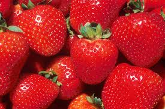

<!-- thuộc tính srcset hiển thị hình ảnh theo độ phân giải tùy chọn -->
<div>

     <br>
</div>
<!-- w-descriptor

Để trang web có khả năng tự lựa chọn ảnh theo kích thước của cửa sổ trình duyệt (browser viewport) hay kích thước của màn hình (screen) (từ đây gọi chung là cửa sổ trình duyệt) chúng ta sẽ sử dụng thuộc tính srcset kết hợp với giá trị w-descriptor. w-descriptor là độ rộng của cửa sổ tính bằng pixel (actual pixel width). Kĩ thuật này được gọi là lựa chọn hình ảnh theo kích thước khung nhìn (viewport-based selection). -->

<!-- 
      <br>

 -->
<!-- Art direction (phần tử picture) -->
<picture>

     <source media="(min-width: 1024px)" srcset="img/icecream-large.jpg">

     <source media="(min-width: 760px)" srcset="img/icecream-medium.jpg">

     

</picture>